县融：重磅！ONAIR阳光云视助推安徽省八大融媒体中心成立！
ONAIR阳光云视一直以来都支持着安徽省、市、县级的媒体融合工作！
打造特色APP“今日阜阳”—安徽阜阳市广播电视台
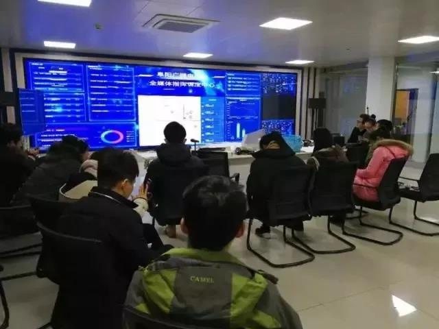
2017年12月25日，阜阳广播电视台全媒体指挥调度平台正式启用，ONAIR媒体云平台帮助了阜阳广播电视台建立全媒体系统，包括全媒体指挥调度中心、采编发联动平台、技术支撑平台、全媒体资源库等系统，是阜阳广播电视台媒体融合的标志性工程。
其中称为亮点的就是ONAIR媒体云平台打造的APP”今日阜阳”是以新闻资讯、社交娱乐、生活服务为一体的具有广播电视特色的无线应用客户端。为阜阳市民提供广播电视节目、各类服务使用信息和便民服务ONAIR媒体云平台升级后又上线了圈子管理和vlog等等。提供方全面迅捷的海量信息咨询、灵活的社交互动交互方式，便捷的消费体验。
“新广播 融媒体”—马鞍山市广播电视台融媒体平台
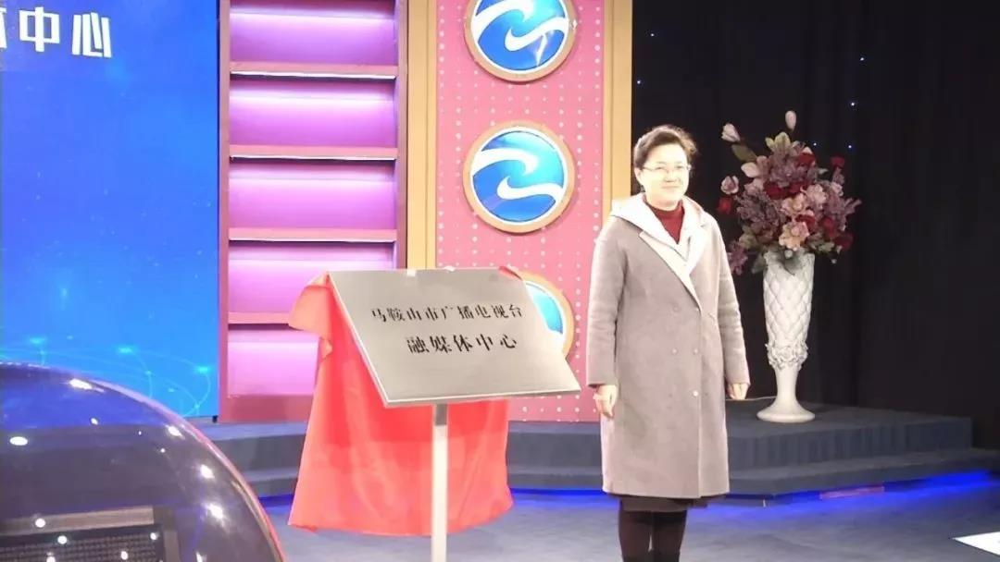
2018年12月29日，马鞍山广播电视台融媒体中心正式揭牌，“今日马鞍山”移动客户端上线，马鞍山电视台新闻综合频道、公共频道高清播出开播，这标志着马鞍山广播电视台发展迈入新征程！
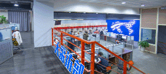
ONAIR媒体云平台完成融媒体项目包括：全媒体新闻融合平台，主要为满足马鞍山市广播电视台基于新媒体客户端（APP、微网站等），实现传统媒体跟新媒体融合的需求，通过构建全媒体新闻融合平台（中央厨房式），可以进一步增强马鞍山市广播电视台作为马鞍山市最主要媒体的引领地位，为新时代舆论宣传、政策导向等，提供强大的技术保障。
打造直播点播、主播圈app—安庆市广播电视台
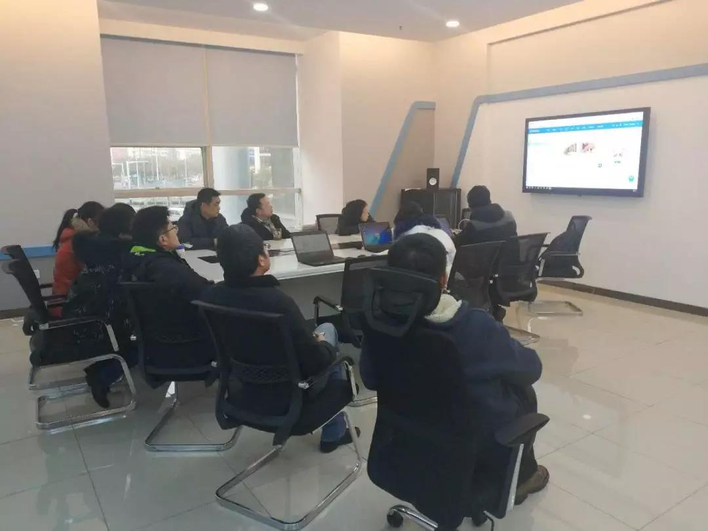
使用ONAIR媒体云平台完成融媒体的各项业务，包括新闻采集、生产、发布、直播，其中新闻发布使用了APP，包含了广电直播点播、主播圈、区县、政务等，实现官网传播内容发布。
“濉溪经验”引来全省围观!—濉溪县融媒体中心
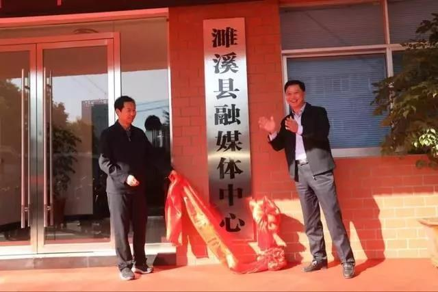
2018年10月27日上午，随着红绸揭开，全国融媒体中心建设试点--濉溪县融媒体中心正式建成，开启了县级媒体宣传从相“加”到相“融”的新征程。安徽省委宣传部副部长夏少权，淮北市委书记、市人大常委会主任黄晓武共同为濉溪县融媒体中心揭牌。
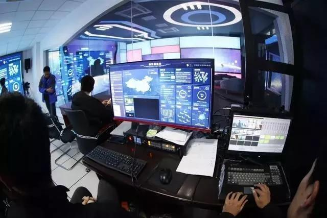
ONAIR媒体云平台的支持是启用濉溪县融媒体中心的核心技术，它是融媒体采编发系统当中的基础技术平台，也是融媒体中心的大脑和神经中枢。符合“新旧融合、一次采集、多种生成、多元发布、全天滚动、多元覆盖”等“中央厨房”基本理念。
吸引两大省级媒体集团调研—研枞阳县融媒体中心
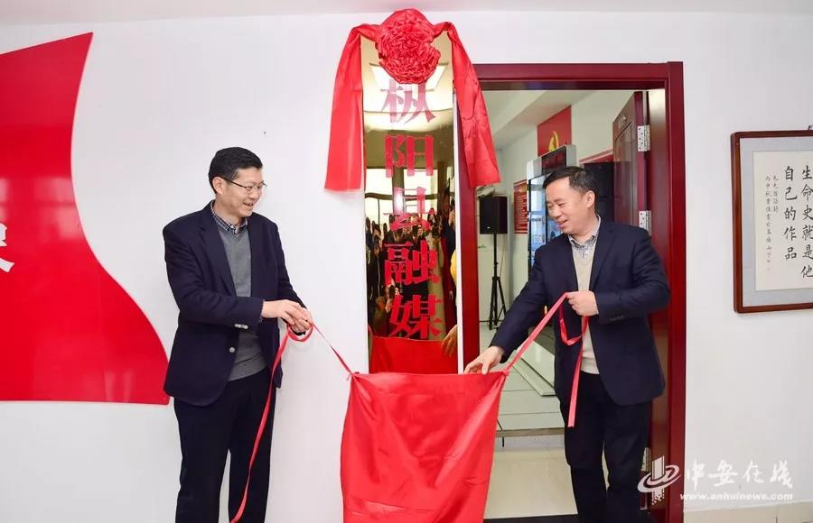
12月4日枞阳县融媒体中心举行揭牌仪式，安徽日报报业集团、安徽新媒体集团共同调研枞阳县融媒体中心，参观了枞阳县融媒体指挥中心，详细了解中心建设组织架构、运作流程、队伍建设、硬件建设等基本情况。使用ONAIR媒体云平台的完成了指挥调度、新闻采集、生产、发布、直播，其中新闻发布使用了APP或者微站等业务。
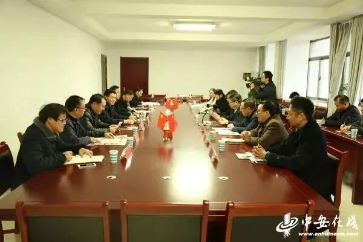
ONAIR阳光云视让广德融媒体中心，实现了媒体融合形式，并不断面向市场、拓展业务和服务功能，有力实现了资源整合，形成了自上而下良性互动的立体化宣传格局，从而推动了媒体融合的成功转型。
县融媒体改革翻开新的篇章—广德县融媒体中心
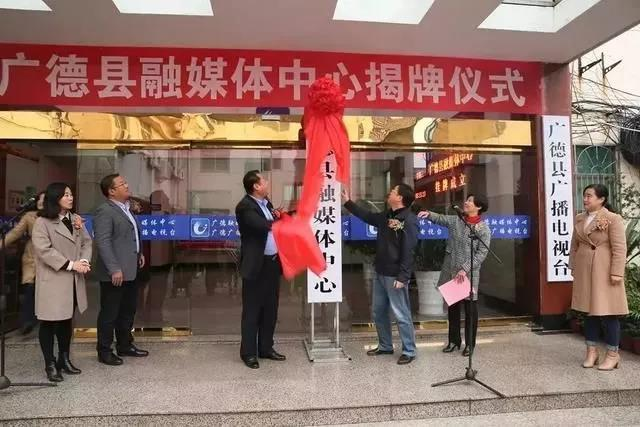
2018年12月5日，安徽省市委宣传部常务副部长郑华、县委书记王庆武、县委副书记李军、副县长江晓华出席揭牌仪式，县委常委、宣传部长刘群主持揭牌仪式，安徽省广德县融媒体中心正式挂牌成立！
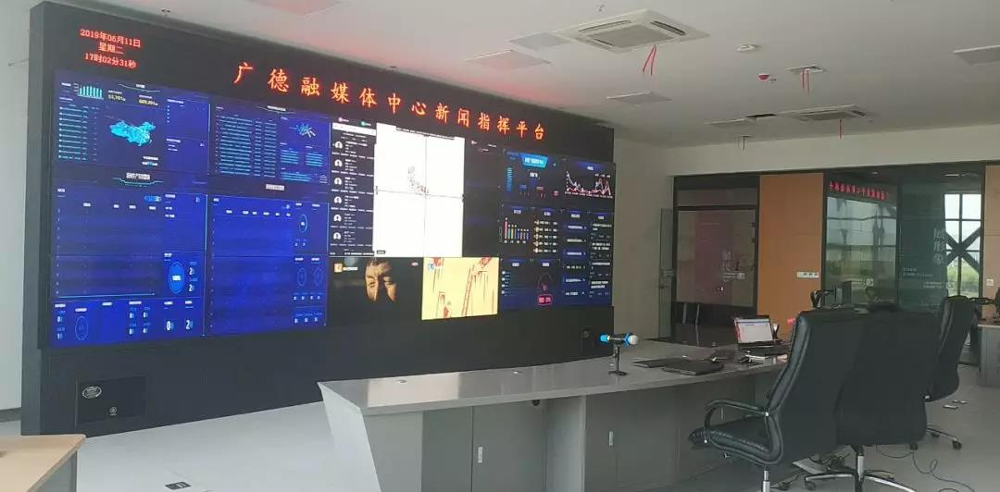
现如今应用ONAIR媒体云平台的技术支持，媒体融合工作现已基本形成“广播+报纸+电视+2个网站+2个微信公众号+‘我的广德’手机APP”的融媒体平台，实现了“一次采集、多种生成、多平台发布”的媒体融合形式，并不断面向市场、拓展业务和服务功能，有力实现了资源整合，形成了自上而下良性互动的立体化宣传格局，有效推动了媒体融合的成功转型。
第一批县级融媒体建设单位—寿县融媒体中心
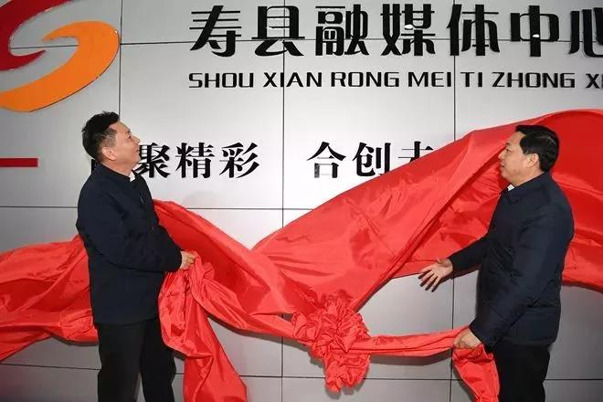
12月19日安徽新媒体集团党委委员、副总经理许海龙，淮南市委宣传部副部长解厚成，淮南市委宣传部副部长、淮南日报社党委书记、社长唐剑，淮南市广播电视台党委书记、台长洪浩共同见证揭牌仪式。
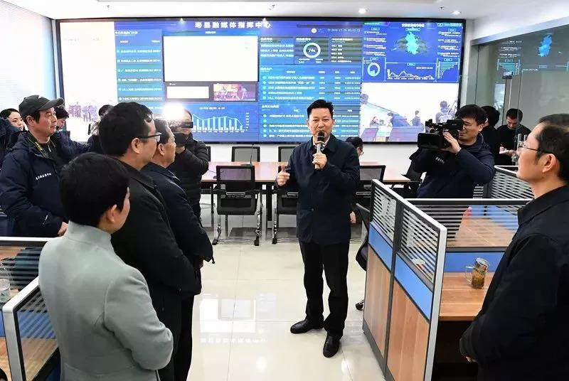
作为安徽第一批县级融媒体建设单位，寿县宣传部利用ONAIR媒体云平台打造的对外宣传技术平台，同时在大屏展示层面接入了原有发布端的政务、党建、民生等数据展示。
凡是过往，皆为序幕—和县融媒体中心正式揭牌！
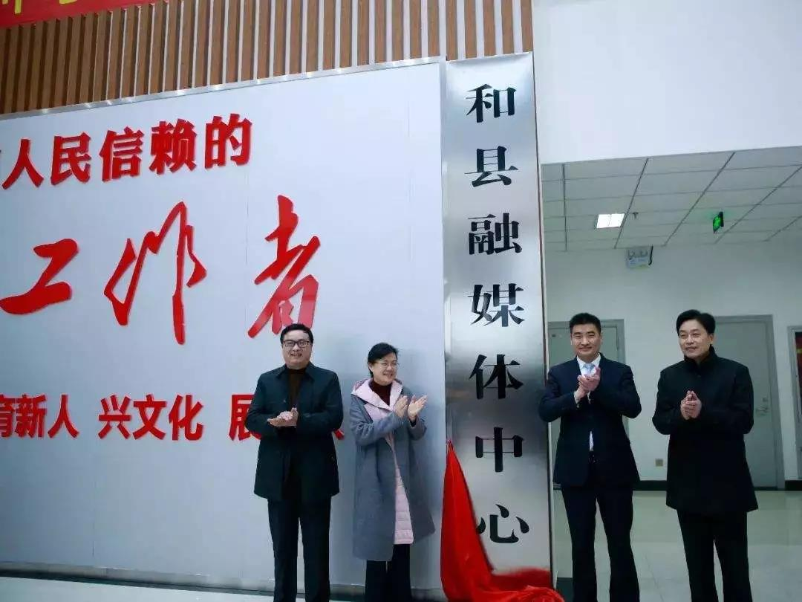
2018年12月26日，马鞍山市和县融媒体中心正式揭牌！打造了今日和县APP客户端，作为融媒体发布的多元化承载平台，实现新闻资讯+政务+服务的集中呈现。中心的建成将进一步提升和县新闻宣传的传播力、引导力、影响力和公信力，从而为传播和县好声音，传递和县正能量，起到积极推动作用。
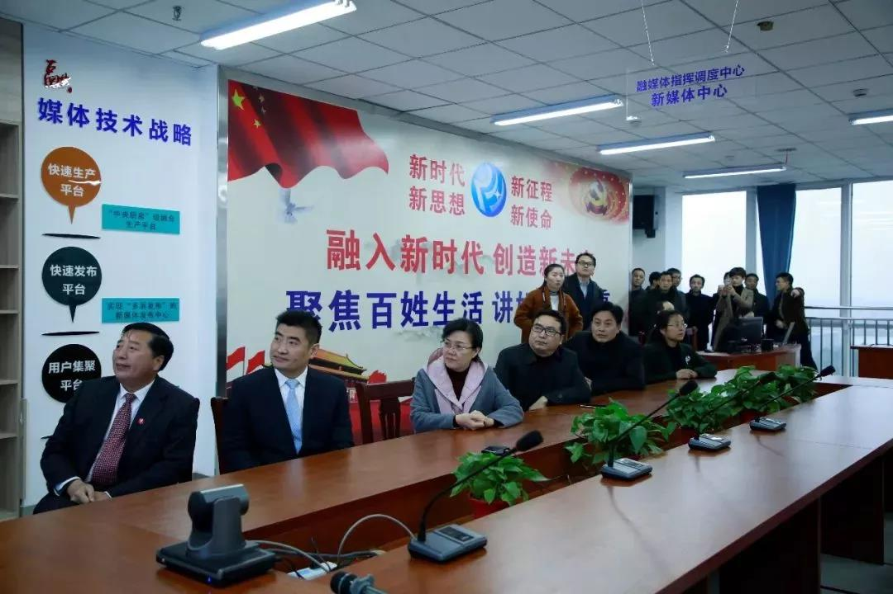
ONAIR媒体云平台为和县融媒体中心提供新媒体产品开发、策采编发平台、指挥调度系统、新媒体编辑发布、传播效果分析等全方位技术支持及相关配套设施。同时，还将协助和县融媒体中心打造多个终端呈现内容的全新全媒体生态，形成全新新闻生产流程和模式。此外，安徽省新媒体集团还将在新闻传播、新媒体产品等领域进行广告运营、资源共享、渠道共享等各类合作。
凡是过往，皆为序幕，ONAIR阳光云视在2019年将继续不断创新，砥砺前行！